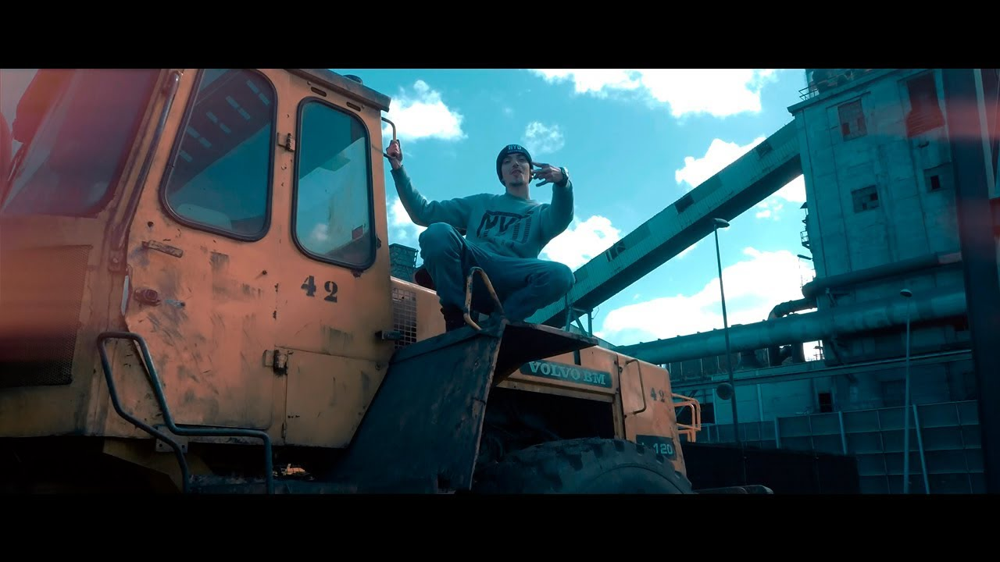

Blake
Lengua de Serpiente, 29 mar 2018
Alejandro Cabrera Rodríguez, mas conocido como Blake, es un rapero español.
Empezó en el mundo del rap desde su adolescencia. Desde ese momento decidió escribir sus propias canciones, no disponía de muchos recursos por lo que la baja calidad de estas era evidente. Tocaba el piano desde pequeño y muchas de sus bases las hacía así.
Profesionalmente empezó en el mundo de la música en 2008, formaba parte del grupo Gran Calibre, junto al rapero Escualo quen conoció en Gran Canaria, años posteriores decidieron de seguir su carrera por separado, aunque de vez en cuando siguieron colaborando entre sí.
Su primer album fue Visceral, lanzado en 2017, en el que cuenta las experiencias de su vida y esta marcado por la pérdida de su abuelo, al que le dedicó el disco entero.
Algunos de sus otros discos son: Talismán(2019) y Daboia Russelii (2021) este ha seguido sacando temas.
Este rapero a menudo plasma su rabia y tristeza en sus canciones, por lo que nos cuenta el solo escribe cuando se siente mal, ha mencionado al rap como medio de desahogo. Ademas de mencionar temas como al maltrato de la mujer y el feminismo. Habla mucho sobre sus propias experiencias y sobre sus sentimientos, defiende desigualdades y menciona a todas las personas que alguna vez minimizaron su talento o le hicieron creer que no podía llegar a ser algo en la vida.